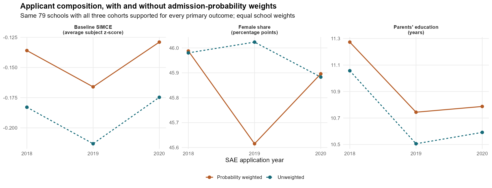
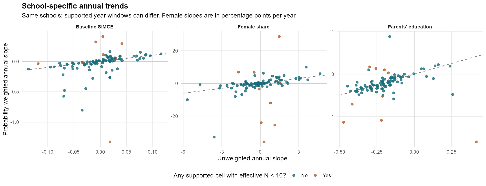

Admission-probability-weighted applicant composition
For each school, cohort and characteristic, calculate weighted mean = sum(p_admission x X) / sum(p_admission) among applicants with X observed. Probabilities are specific to the destination school, summed across its programs. This is a ratio of expected characteristic totals to expected admissions among observed applicants, used as a proxy for the composition of admitted students.
How many schools have significant trends?
Raw two-sided p < .05, with no multiple-testing adjustment. The three counted outcomes are average grade-4 SIMCE z-scores, female share, and reported parents' schooling years.
| Weights | Test | Schools with a test | At least one | Exactly one | Exactly two | All three | At least two | No test available |
|---|---|---|---|---|---|---|---|---|
| Unweighted | Cohort means OLS | 86 | 8 | 8 | 0 | 0 | 0 | 14 |
| Unweighted | Independent applicants HC2 | 100 | 81 | 56 | 23 | 2 | 25 | 0 |
| Probability weighted | Cohort means OLS | 80 | 9 | 9 | 0 | 0 | 0 | 20 |
| Probability weighted | Independent applicants HC2 | 97 | 68 | 47 | 20 | 1 | 21 | 3 |
With probability weights, cohort-mean OLS detects at least one trend in 9 of 80 testable schools; all are in exactly one outcome. Independent-applicant HC2 detects at least one in 68 of 97: exactly one in 47, exactly two in 20, and all three in 1.
The school set is unchanged, but zero probability mass removes some cohort means, so available test counts and occasionally the year windows differ from the unweighted version. Schools without tests are not classified as having zero trends.
Which characteristics trend?
| Outcome | Cohort OLS: p < .05 / testable | Applicant HC2: p < .05 / testable | Median annual slope | Unit |
|---|---|---|---|---|
| Baseline SIMCE | 6 / 80 | 33 / 97 | -0.002 | average subject z-score |
| Female share | 1 / 78 | 10 / 91 | -0.021 | percentage points |
| Parents' education | 2 / 79 | 47 / 97 | -0.215 | years |


Every school and outcome
| Rank / school | Supported cohorts | Weighted slope | Unweighted slope | Weighted cohort p | Unweighted cohort p | Weighted HC2 p | Unweighted HC2 p | Min. effective N |
|---|
Slopes are per year. Female slopes are in percentage points. Effective N = (sum p)2 / sum(p2) within school-cohort-outcome; it describes weight concentration and is not used as a regression degrees-of-freedom replacement. Bold p-values are below .05. Missing tests remain blank.
Probability linkage and missing characteristics
All 115,880 distinct applicants in the original top-school panel have a complete probability distribution summing to one, including the unmatched option. Of 212,608 listed applicant-school pairs, 134,426 have positive probability and 78,182 have zero probability. Absent school rows are treated as zero only after checking each applicant's complete distribution. Across all three cohorts, the listed-school weights sum to 51579.75 expected admissions.
Keep genuine submitted choices from the original panel. The simulation also has 346 positive-probability top-school pairs absent from those submitted choices (total mass 221.01); these are not added to the analysis. Program probabilities within the same RBD are summed before joining, so applicants are counted once per school.
| Outcome | Year | Observed probability mass (%) | Median effective N | Minimum effective N |
|---|---|---|---|---|
| Female share | 2018 | 100.0 | 326.5 | 1.0 |
| Female share | 2019 | 100.0 | 293.9 | 1.2 |
| Female share | 2020 | 100.0 | 296.6 | 1.0 |
| Parents' education | 2018 | 78.6 | 269.5 | 3.7 |
| Parents' education | 2019 | 79.2 | 238.2 | 1.1 |
| Parents' education | 2020 | 76.2 | 231.3 | 1.0 |
| Baseline SIMCE | 2018 | 84.3 | 278.0 | 1.0 |
| Baseline SIMCE | 2019 | 84.4 | 250.8 | 1.1 |
| Baseline SIMCE | 2020 | 81.8 | 250.4 | 1.0 |
Cells with no weighted mean or effective N below 10
| Rank | RBD | School | Year | Outcome | Applicants | Positive-weight observed N | Observed probability mass | Effective N |
|---|---|---|---|---|---|---|---|---|
| 13 | 4163 | LICEO LOS ÁNGELES A-59 | 2020 | Female share | 897 | 11 | 4.401 | 9.8 |
| 13 | 4163 | LICEO LOS ÁNGELES A-59 | 2020 | Parents' education | 897 | 7 | 2.787 | 6.4 |
| 13 | 4163 | LICEO LOS ÁNGELES A-59 | 2020 | Baseline SIMCE | 897 | 8 | 3.248 | 7.4 |
| 20 | 20266 | LICEO BICENTENARIO DE TEMUCO | 2018 | Female share | 818 | 0 | 0.000 | -- |
| 20 | 20266 | LICEO BICENTENARIO DE TEMUCO | 2019 | Female share | 891 | 0 | 0.000 | -- |
| 20 | 20266 | LICEO BICENTENARIO DE TEMUCO | 2020 | Female share | 898 | 1 | 1.000 | 1.0 |
| 20 | 20266 | LICEO BICENTENARIO DE TEMUCO | 2018 | Parents' education | 818 | 0 | 0.000 | -- |
| 20 | 20266 | LICEO BICENTENARIO DE TEMUCO | 2019 | Parents' education | 891 | 0 | 0.000 | -- |
| 20 | 20266 | LICEO BICENTENARIO DE TEMUCO | 2020 | Parents' education | 898 | 1 | 1.000 | 1.0 |
| 20 | 20266 | LICEO BICENTENARIO DE TEMUCO | 2018 | Baseline SIMCE | 818 | 0 | 0.000 | -- |
| 20 | 20266 | LICEO BICENTENARIO DE TEMUCO | 2019 | Baseline SIMCE | 891 | 0 | 0.000 | -- |
| 20 | 20266 | LICEO BICENTENARIO DE TEMUCO | 2020 | Baseline SIMCE | 898 | 1 | 1.000 | 1.0 |
| 40 | 704 | LICEO ALEJANDRO ALVAREZ JOFRE | 2018 | Female share | 758 | 0 | 0.000 | -- |
| 40 | 704 | LICEO ALEJANDRO ALVAREZ JOFRE | 2020 | Female share | 664 | 453 | 3.240 | 8.5 |
| 40 | 704 | LICEO ALEJANDRO ALVAREZ JOFRE | 2018 | Parents' education | 758 | 0 | 0.000 | -- |
| 40 | 704 | LICEO ALEJANDRO ALVAREZ JOFRE | 2018 | Baseline SIMCE | 758 | 0 | 0.000 | -- |
| 47 | 2995 | INSTITUTO ANDRES BELLO | 2018 | Female share | 697 | 12 | 4.601 | 6.9 |
| 47 | 2995 | INSTITUTO ANDRES BELLO | 2019 | Female share | 709 | 10 | 2.646 | 5.4 |
| 47 | 2995 | INSTITUTO ANDRES BELLO | 2020 | Female share | 555 | 10 | 2.609 | 9.7 |
| 47 | 2995 | INSTITUTO ANDRES BELLO | 2018 | Parents' education | 697 | 9 | 3.975 | 5.9 |
| 47 | 2995 | INSTITUTO ANDRES BELLO | 2019 | Parents' education | 709 | 8 | 2.256 | 4.1 |
| 47 | 2995 | INSTITUTO ANDRES BELLO | 2020 | Parents' education | 555 | 9 | 2.478 | 9.0 |
| 47 | 2995 | INSTITUTO ANDRES BELLO | 2018 | Baseline SIMCE | 697 | 9 | 3.975 | 5.9 |
| 47 | 2995 | INSTITUTO ANDRES BELLO | 2019 | Baseline SIMCE | 709 | 10 | 2.646 | 5.4 |
| 47 | 2995 | INSTITUTO ANDRES BELLO | 2020 | Baseline SIMCE | 555 | 9 | 2.478 | 9.0 |
| 52 | 9100 | LICEO REPUBLICA DE SIRIA | 2020 | Female share | 898 | 193 | 3.921 | 9.3 |
| 52 | 9100 | LICEO REPUBLICA DE SIRIA | 2019 | Parents' education | 979 | 8 | 5.939 | 6.7 |
| 52 | 9100 | LICEO REPUBLICA DE SIRIA | 2020 | Parents' education | 898 | 150 | 3.455 | 7.2 |
| 52 | 9100 | LICEO REPUBLICA DE SIRIA | 2019 | Baseline SIMCE | 979 | 9 | 6.939 | 7.7 |
| 52 | 9100 | LICEO REPUBLICA DE SIRIA | 2020 | Baseline SIMCE | 898 | 161 | 3.573 | 7.7 |
| 56 | 9071 | LICEO AUGUSTO D HALMAR | 2020 | Female share | 873 | 0 | 0.000 | -- |
| 56 | 9071 | LICEO AUGUSTO D HALMAR | 2020 | Parents' education | 873 | 0 | 0.000 | -- |
| 56 | 9071 | LICEO AUGUSTO D HALMAR | 2020 | Baseline SIMCE | 873 | 0 | 0.000 | -- |
| 58 | 2991 | COLEGIO MONSENOR MANUEL LARRAIN | 2018 | Female share | 577 | 4 | 0.672 | 3.8 |
| 58 | 2991 | COLEGIO MONSENOR MANUEL LARRAIN | 2019 | Female share | 660 | 9 | 4.850 | 7.9 |
| 58 | 2991 | COLEGIO MONSENOR MANUEL LARRAIN | 2020 | Female share | 567 | 0 | 0.000 | -- |
| 58 | 2991 | COLEGIO MONSENOR MANUEL LARRAIN | 2018 | Parents' education | 577 | 4 | 0.672 | 3.8 |
| 58 | 2991 | COLEGIO MONSENOR MANUEL LARRAIN | 2019 | Parents' education | 660 | 6 | 3.753 | 6.0 |
| 58 | 2991 | COLEGIO MONSENOR MANUEL LARRAIN | 2020 | Parents' education | 567 | 0 | 0.000 | -- |
| 58 | 2991 | COLEGIO MONSENOR MANUEL LARRAIN | 2018 | Baseline SIMCE | 577 | 4 | 0.672 | 3.8 |
| 58 | 2991 | COLEGIO MONSENOR MANUEL LARRAIN | 2019 | Baseline SIMCE | 660 | 6 | 3.753 | 6.0 |
| 58 | 2991 | COLEGIO MONSENOR MANUEL LARRAIN | 2020 | Baseline SIMCE | 567 | 0 | 0.000 | -- |
| 78 | 17908 | COLEGIO POLIVALENTE PADRE ALBERTO HURTADO | 2020 | Female share | 475 | 0 | 0.000 | -- |
| 78 | 17908 | COLEGIO POLIVALENTE PADRE ALBERTO HURTADO | 2019 | Parents' education | 556 | 157 | 5.136 | 6.2 |
| 78 | 17908 | COLEGIO POLIVALENTE PADRE ALBERTO HURTADO | 2020 | Parents' education | 475 | 0 | 0.000 | -- |
| 78 | 17908 | COLEGIO POLIVALENTE PADRE ALBERTO HURTADO | 2019 | Baseline SIMCE | 556 | 168 | 5.150 | 6.2 |
| 78 | 17908 | COLEGIO POLIVALENTE PADRE ALBERTO HURTADO | 2020 | Baseline SIMCE | 475 | 0 | 0.000 | -- |
| 80 | 304 | LICEO BICENTENARIO ANDRES SABELLA | 2018 | Female share | 591 | 1 | 1.000 | 1.0 |
| 80 | 304 | LICEO BICENTENARIO ANDRES SABELLA | 2020 | Female share | 414 | 160 | 7.077 | 8.3 |
| 80 | 304 | LICEO BICENTENARIO ANDRES SABELLA | 2018 | Parents' education | 591 | 0 | 0.000 | -- |
| 80 | 304 | LICEO BICENTENARIO ANDRES SABELLA | 2019 | Parents' education | 542 | 114 | 5.998 | 8.7 |
| 80 | 304 | LICEO BICENTENARIO ANDRES SABELLA | 2020 | Parents' education | 414 | 113 | 6.953 | 8.0 |
| 80 | 304 | LICEO BICENTENARIO ANDRES SABELLA | 2018 | Baseline SIMCE | 591 | 1 | 1.000 | 1.0 |
| 80 | 304 | LICEO BICENTENARIO ANDRES SABELLA | 2019 | Baseline SIMCE | 542 | 121 | 6.056 | 8.8 |
| 80 | 304 | LICEO BICENTENARIO ANDRES SABELLA | 2020 | Baseline SIMCE | 414 | 124 | 6.968 | 8.1 |
| 81 | 429 | LICEO CATÓLICO ATACAMA | 2019 | Female share | 558 | 9 | 1.099 | 1.2 |
| 81 | 429 | LICEO CATÓLICO ATACAMA | 2020 | Female share | 490 | 11 | 3.992 | 9.6 |
| 81 | 429 | LICEO CATÓLICO ATACAMA | 2019 | Parents' education | 558 | 7 | 1.072 | 1.1 |
| 81 | 429 | LICEO CATÓLICO ATACAMA | 2020 | Parents' education | 490 | 6 | 2.432 | 5.8 |
| 81 | 429 | LICEO CATÓLICO ATACAMA | 2019 | Baseline SIMCE | 558 | 7 | 1.072 | 1.1 |
| 81 | 429 | LICEO CATÓLICO ATACAMA | 2020 | Baseline SIMCE | 490 | 7 | 2.526 | 6.2 |
| 83 | 31103 | LICEO BICENTENARIO DE CORONEL | 2018 | Female share | 468 | 6 | 2.275 | 6.0 |
| 83 | 31103 | LICEO BICENTENARIO DE CORONEL | 2019 | Female share | 484 | 0 | 0.000 | -- |
| 83 | 31103 | LICEO BICENTENARIO DE CORONEL | 2020 | Female share | 581 | 0 | 0.000 | -- |
| 83 | 31103 | LICEO BICENTENARIO DE CORONEL | 2018 | Parents' education | 468 | 4 | 1.523 | 4.0 |
| 83 | 31103 | LICEO BICENTENARIO DE CORONEL | 2019 | Parents' education | 484 | 0 | 0.000 | -- |
| 83 | 31103 | LICEO BICENTENARIO DE CORONEL | 2020 | Parents' education | 581 | 0 | 0.000 | -- |
| 83 | 31103 | LICEO BICENTENARIO DE CORONEL | 2018 | Baseline SIMCE | 468 | 6 | 2.275 | 6.0 |
| 83 | 31103 | LICEO BICENTENARIO DE CORONEL | 2019 | Baseline SIMCE | 484 | 0 | 0.000 | -- |
| 83 | 31103 | LICEO BICENTENARIO DE CORONEL | 2020 | Baseline SIMCE | 581 | 0 | 0.000 | -- |
| 91 | 5654 | INSTITUTO CLARET | 2020 | Female share | 371 | 13 | 2.568 | 5.3 |
| 91 | 5654 | INSTITUTO CLARET | 2020 | Parents' education | 371 | 9 | 1.100 | 7.4 |
| 91 | 5654 | INSTITUTO CLARET | 2020 | Baseline SIMCE | 371 | 10 | 1.240 | 8.4 |
| 96 | 16748 | LICEO BICENTENARIO ORIENTE DE TALCA | 2018 | Female share | 391 | 143 | 2.420 | 3.9 |
| 96 | 16748 | LICEO BICENTENARIO ORIENTE DE TALCA | 2019 | Female share | 561 | 0 | 0.000 | -- |
| 96 | 16748 | LICEO BICENTENARIO ORIENTE DE TALCA | 2018 | Parents' education | 391 | 112 | 2.353 | 3.7 |
| 96 | 16748 | LICEO BICENTENARIO ORIENTE DE TALCA | 2019 | Parents' education | 561 | 0 | 0.000 | -- |
| 96 | 16748 | LICEO BICENTENARIO ORIENTE DE TALCA | 2018 | Baseline SIMCE | 391 | 122 | 2.379 | 3.8 |
| 96 | 16748 | LICEO BICENTENARIO ORIENTE DE TALCA | 2019 | Baseline SIMCE | 561 | 0 | 0.000 | -- |
Inference and interpretation
Independent applicants: fit the individual characteristic on year with weight p / sum(p) within the observed school-cohort-outcome. This exactly reproduces the cohort-mean slope. Use regression HC2 standard errors and t(N_positive - 2), treating simulated probabilities as fixed. This ignores simulation uncertainty, assignment dependence, common cohort shocks and dependence by origin school. Zero-weight observations are excluded. Constant outcomes and undefined HC2 cases receive no artificial p-values.
This proxy emphasizes applicants likely to be assigned to a school. It does not model offer take-up or actual enrollment, and a ratio of expected totals is not generally the expected realized mean when enrollment is random. Parent-education missingness and questionnaire comparability remain relevant. No new trimming, imputation, probability threshold or school reranking is introduced.